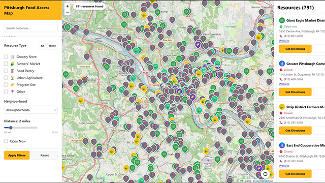
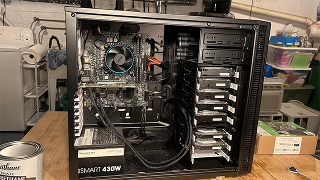
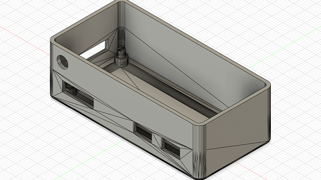
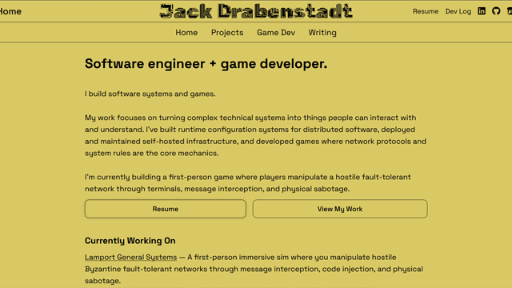

Projects
Dynamic Reconfiguration in Spire
Designed and implemented runtime configuration and key management for a multi-site intrusion-tolerant distributed system with Dr. Amy Babay.
Pittsburgh Food Access Map
Rebuilt a community resource map with React/React Native, Flask, and PostgreSQL. Features include admin dashboard, community reporting, and WCAG 2.1 accessibility. Partnered with Pittsburgh Policy Initiative.
Home Server
Built and managed a self-hosted, containerized server with nearly 50TB of storage, reverse proxies, and fail2ban.
Whole Home Audio
Built a multi-room Spotify streaming system using Snapcast, Raspberry Pis, and 3D-printed cases.
Raspberry Pi Music Player
⚠️Under Construction⚠️
This Website!
Designed and implemented this website.